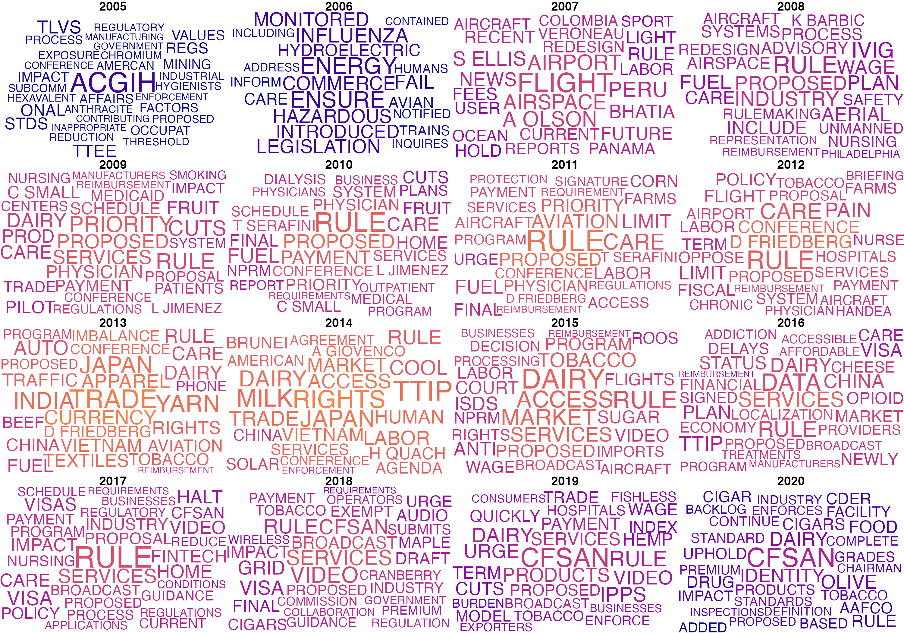
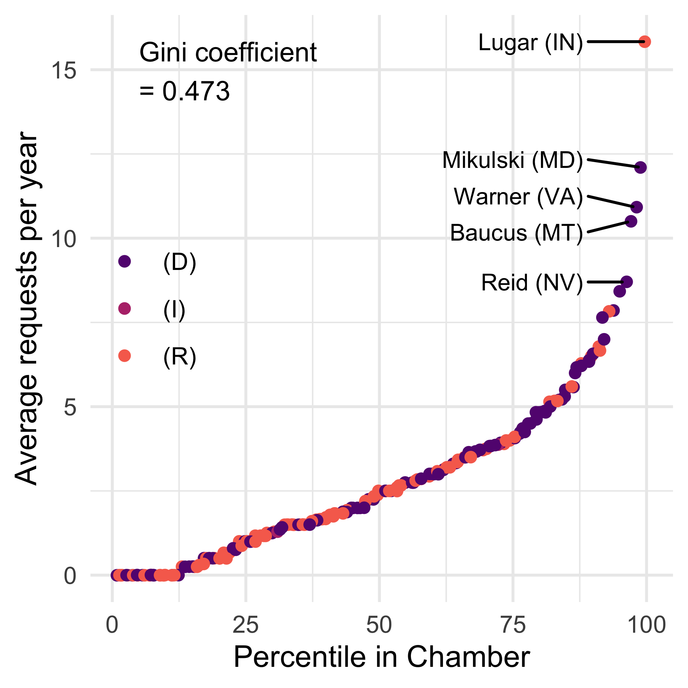
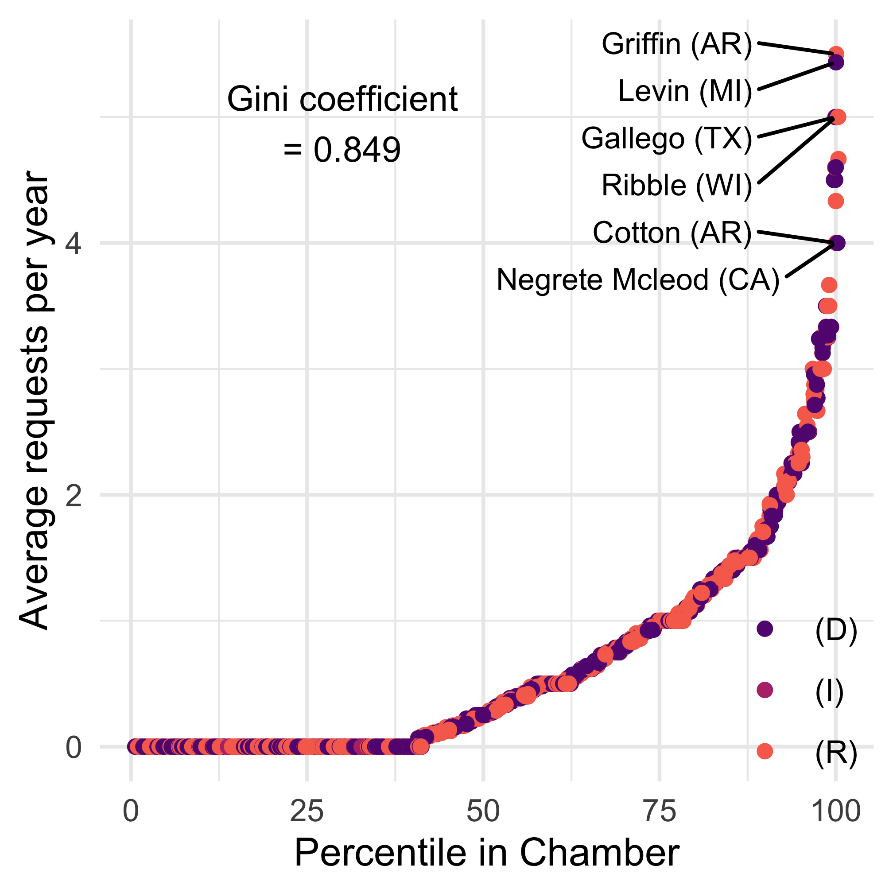
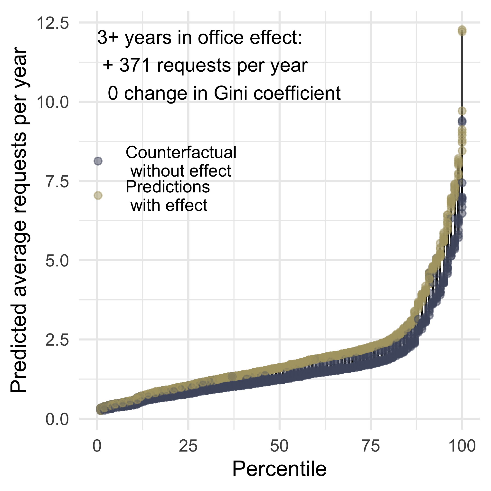
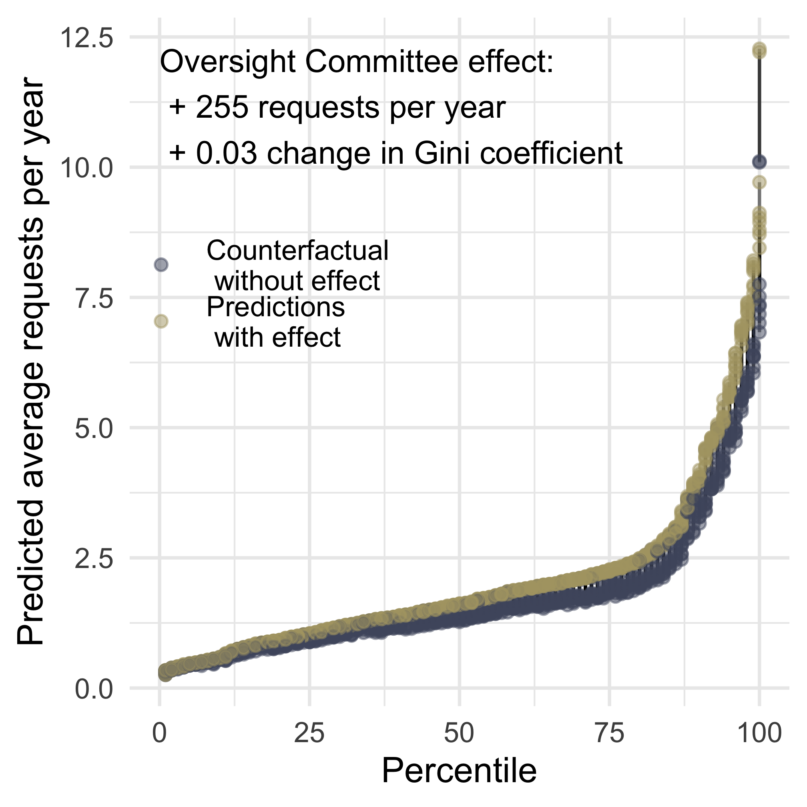
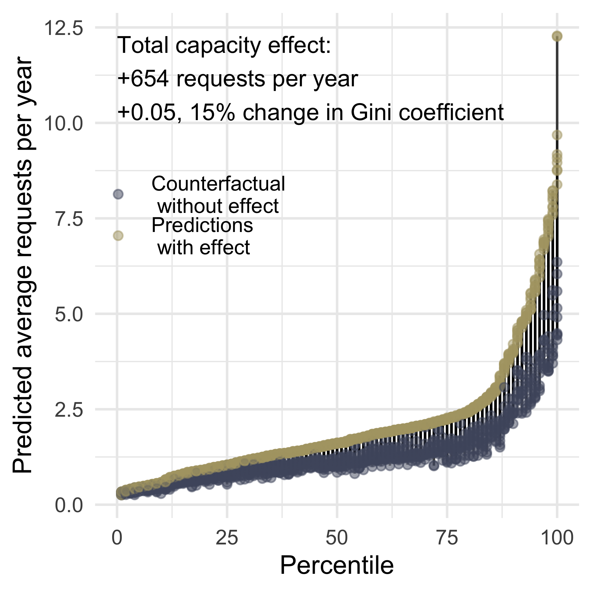
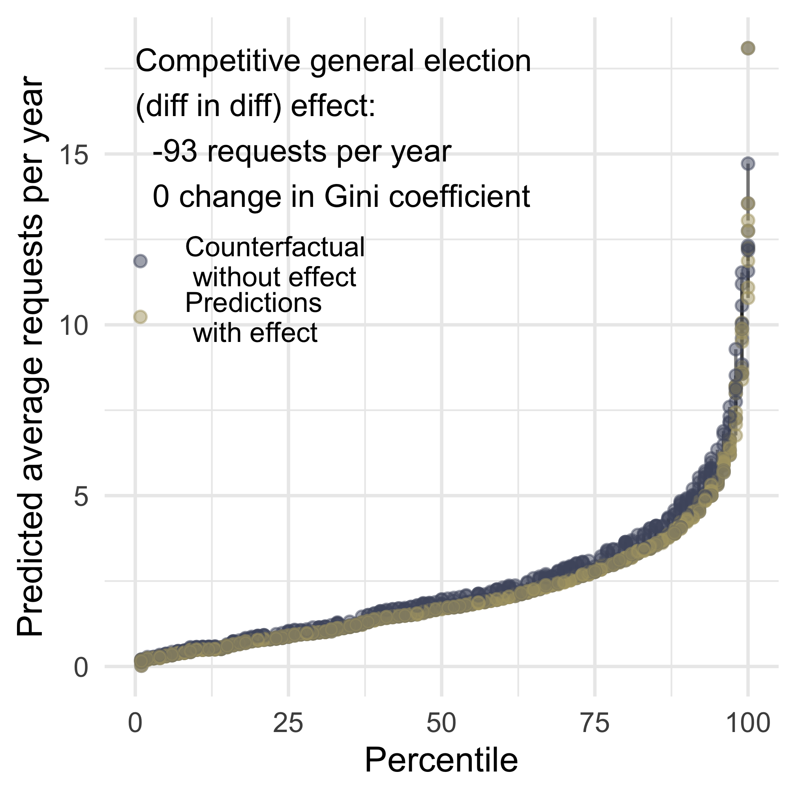
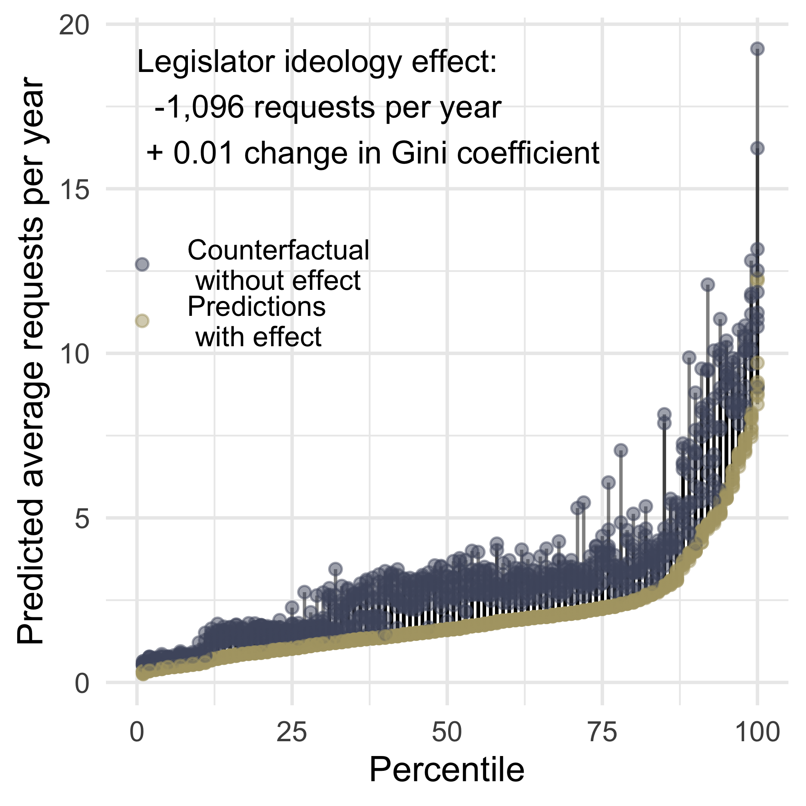
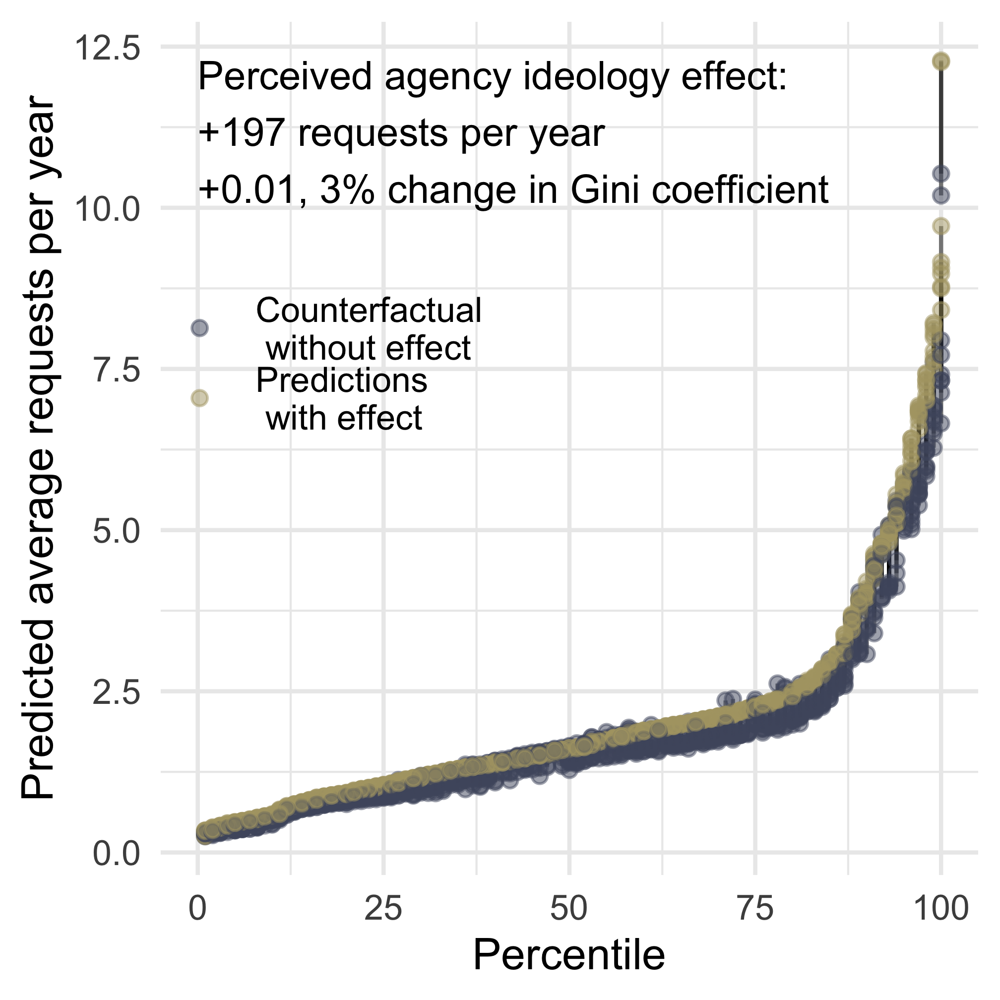
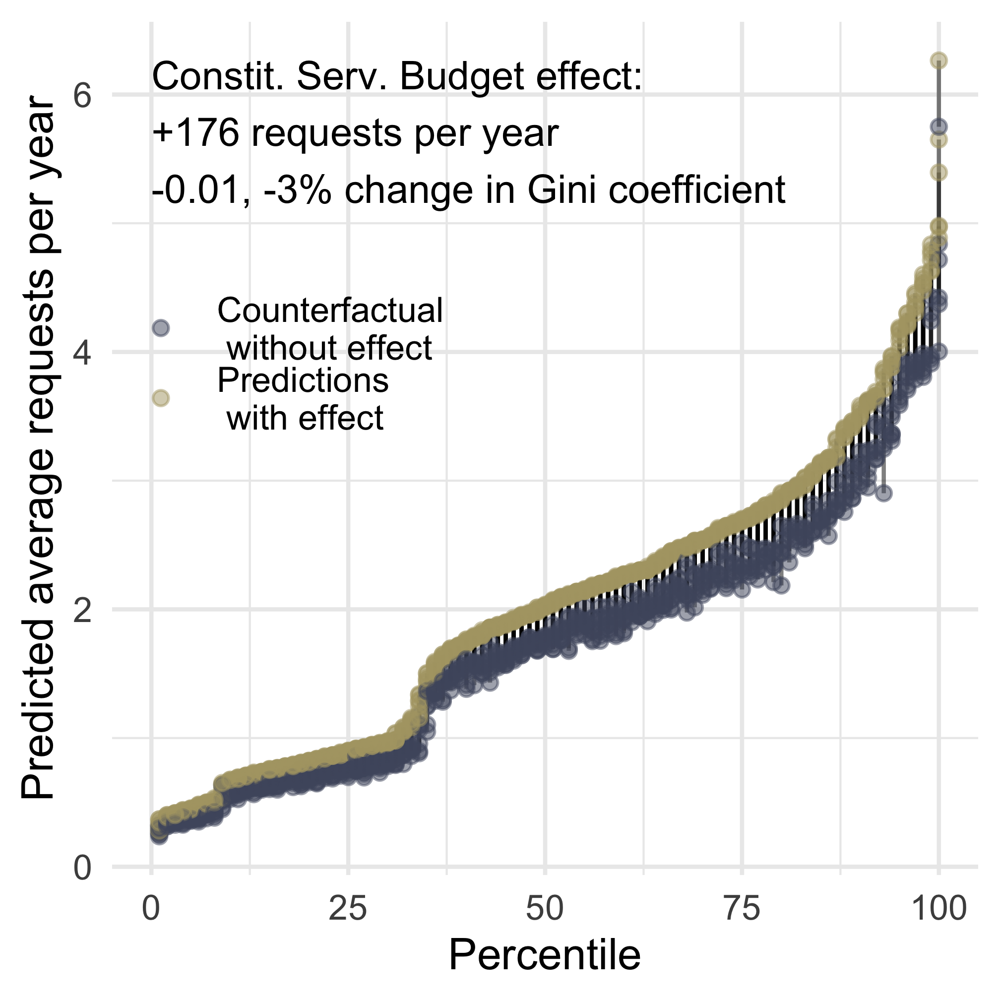

9 Policy Work on Behalf of Business
ABSTRACT: Policy work on behalf of businesses, in some ways, looks like other policy work (chairs, ranking members, and oversight committee members do more). In other ways, it is distinctly more partisan; having a co-partisan president is a much stronger predictor.
9.1 What is policy work on behalf of businesses?
We define commercial policy to include “anything applying to a class of commercial activity or businesses (e.g. shipping, airlines, agriculture),” including “legislation, bills, acts, appropriations, authorizations, etc.” In many cases, congressional letters or agency log files that summarized the messages they received from legislators mentioned specific industries, which meant that these contacts were often fairly straightforward to code. For example, members of Congress regularly write to the U.S. Trade Representative on topics including imports of Brazilian cotton, Argentinian beef, rare earth minerals, Boeing and Airbus contracts, lumber markets in Peru, and intellectual property and copyright.
In this chapter, we examine what policy work on behalf of corporations and business interests looks like, document the inequality in corporate policy work, and examine what explains the provision of corporate policy representation.
9.2 What it looks like
Figure 9.1 below shows the most frequent words used in corporate policy-related messages from legislators to federal agencies over time.1 The prevalence of the terms “rule” and “proposed” suggests that legislators are often inquiring about rules and the rule-making process.
Much of legislators’ correspondence regarding policy work on behalf of industries and business was directed to the Office of the U.S. Trade Representative (USTR) within the Executive Office of the President. More specifically, legislators often wrote to USTR and other agencies about industries with a strong presence in their state or district. The staff of Senator Mark Warner (D-VA) wrote to USTR about a proposal within the Trans-Pacific Partnership that involved tobacco, and Senator Tammy Baldwin (D-WI) wrote to USTR about beer and the Transatlantic Trade and Investment Partnership. Baldwin also wrote to the FDA with concerns about how “policies prohibiting the use of wooden boards” could negatively affect Wisconsin cheese makers.
A number of legislators with a seafood industry presence in their district contacted the FDA about matters affecting this industry. Representative Wayne Gilchrest (R-MD), for instance, wrote regarding seafood labeling, and Representatives Frank Pallone (D-NJ) and Tom Allen (D-ME) wrote regarding “Maine lobster.” Senator Bill Cassidy (R-LA) also wrote to the FDA in support of the shrimp industry, urging the Presidential Task Force on Combating Illegal, Unreported, and Unregulated Fishing and Seafood Fraud to help identify factors that negatively affect shrimp industry trade practices. A group of senators and one representative–Senators Barbara Mikulski (D-MD), Mark Warner (D-VA), and Tim Kaine (D-VA), as well as Representative Rob Wittman (R-VA)–contacted the FDA with a similar concern about “fraudulent labeling of blue crabmeat” and its effect on the livelihood of those who work in the industry in Maryland and Virginia. Interestingly, this particular request (at least as it was summarized by officials at the FDA) highlighted the connection between the health of the industry and the financial well-being of the legislators’ constituents, suggesting that legislators likely see this policy work on behalf of industries as a crucial part of representation.
In addition to letters with multiple signatories from neighboring states or districts, many industry-focused letters came from entire committees. For example, Senator Tom Harkin (D-IA) and the Committee on Agriculture, Nutrition, and Forestry wrote to the FDA about a final rule prohibiting the use of brains and spinal cords from certain cows in animal feed. The committee asked that the FDA “immediately conduct meetings in Iowa and elsewhere” to hear the concerns of the rendering industry about their compliance with this rule. Several letters expressing similar sentiments were sent from other groups of legislators, including one letter from all six of Kentucky’s House members supporting the FDA’s 60-day delay of the implementation of the rule. While we have no record in our data of legislators trying to stop or change this rule before it was about to take effect, the left-censoring of the data means that we cannot rule out the possibility that they did so at some point prior to 2007. Nevertheless, it is illuminating that legislators took these actions on behalf of a key industry at this particular stage of the policymaking process.
9.3 Inequality in Corporate Policy Work
Figure 9.2 shows the inequality in corporate policy work across legislators, with the Senate on the left and the House on the right. These patterns again reveal high levels of inequality in how much work legislators do on behalf of business interests. Inequality in interbranch policy work on behalf of business interests mirrors 2024 levels of income inequality in Zambia (.52) and Honduras (.46) for the House and the Senate, respectively, with inequality among House offices being greater than any other type of interbranch representation. Several of these offices were also top providers of constituency service, including Senators Lugar, Warner, and Reid. Others topped the list for general policy work but not constituency service, including Senators Mikulski and Baucus.


In addition to showing the inequality in corporate policy work, Figure 9.2 also sheds light on how much less common it is relative to other forms of interbranch representation. While 12% of interbranch representation is policy work, just 16% of that is business-related. Combining those percentages, we see that less than 2% of all interbranch representation is about corporate policy. Legislators average between 0 and 40 corporate policy contacts a year, with the median Senator averaging around 5 corporate policy contacts a year, and the average House member around 2 per year.
9.4 What Explains Differences in Policy Work on Behalf of Business?
Table 9.1 below shows the full regression results across cross-section and difference-in-differences model specifications explaining corporate policy work. We find Constituent Demand largely unrelated to corporate policy work, while Capacity and Strategic Choices both play a role in explaining variation in corporate policy work.
| (1) | (2) | (3) | (4) | (5) | (6) | |
|---|---|---|---|---|---|---|
| † p < 0.1, * p < 0.05, ** p < 0.01 | ||||||
| Robust standard errors in parentheses, clustered by legislator. | ||||||
| This table shows estimates of the effect of constituent demand, legislator capacity and strategic choices on levels of interbranch representation. | ||||||
| Dependent variable | Count | Count | Count | Count | Count | Count |
| Constituent Demand | Constituent Demand | Constituent Demand | Constituent Demand | Constituent Demand | Constituent Demand | Constituent Demand |
| Population (Millions) | 0.022** | -0.007 | -0.179 | 0.015* | 0.085 | |
| (0.006) | (0.044) | (0.562) | (0.007) | (0.092) | ||
| % Self Employed | 0.071 | 13.345† | -0.506 | 10.501 | 0.949 | 58.935 |
| (2.120) | (7.166) | (2.544) | (7.854) | (4.940) | (36.397) | |
| % Private Sector | -2.630** | -0.424 | -3.083** | -1.325 | -0.467 | 15.409 |
| (0.630) | (1.795) | (0.668) | (2.110) | (1.364) | (15.089) | |
| % College Grad | 0.091 | -1.262† | -0.048 | -1.081 | 1.862* | 6.955 |
| (0.271) | (0.724) | (0.299) | (0.791) | (0.926) | (13.567) | |
| Strategic Choices Shaped by Political Environment | Strategic Choices Shaped by Political Environment | Strategic Choices Shaped by Political Environment | Strategic Choices Shaped by Political Environment | Strategic Choices Shaped by Political Environment | Strategic Choices Shaped by Political Environment | Strategic Choices Shaped by Political Environment |
| Competitive General | -0.005 | -0.136† | 0.010 | -0.218* | 0.012 | -0.041 |
| (0.050) | (0.078) | (0.065) | (0.105) | (0.076) | (0.106) | |
| Competitive Primary | -0.103 | -0.066 | ||||
| (0.096) | (0.101) | |||||
| President's Party | 0.070 | 0.134** | 0.086 | 0.118† | -0.037 | 0.074 |
| (0.078) | (0.046) | (0.111) | (0.068) | (0.118) | (0.065) | |
| Republican | 0.090 | 0.189** | -0.072 | |||
| (0.059) | (0.071) | (0.114) | ||||
| Independent | -0.451 | -0.328 | ||||
| (0.342) | (0.372) | |||||
| Ideological Distance | 0.386** | 0.426** | 0.366** | |||
| (0.076) | (0.095) | (0.132) | ||||
| Distance x President's Party | 0.120 | 0.112 | 0.177 | |||
| (0.101) | (0.144) | (0.148) | ||||
| | 1st Dim. DW-NOMINATE | | -1.220** | -1.147** | -1.304** | |||
| (0.185) | (0.219) | (0.356) | ||||
| Capacity | Capacity | Capacity | Capacity | Capacity | Capacity | Capacity |
| Reporting Committee | 0.314** | 0.095 | 0.362** | 0.034 | 0.315* | 0.477* |
| (0.058) | (0.089) | (0.064) | (0.120) | (0.127) | (0.188) | |
| Three+ Years in Office | 0.280** | 0.294** | 0.245** | 0.229** | 0.421** | 0.292* |
| (0.054) | (0.066) | (0.069) | (0.086) | (0.127) | (0.141) | |
| Committee Chair | 0.199** | 0.112 | 0.225* | 0.247 | 0.177† | 0.131 |
| (0.074) | (0.092) | (0.113) | (0.151) | (0.102) | (0.097) | |
| Ranking Member | 0.270** | 0.156† | 0.265* | 0.173 | 0.261* | 0.238* |
| (0.088) | (0.091) | (0.129) | (0.179) | (0.108) | (0.100) | |
| Subcommittee Chair | 0.012 | 0.055 | -0.052 | -0.053 | -0.006 | 0.226** |
| (0.050) | (0.051) | (0.060) | (0.065) | (0.094) | (0.078) | |
| Served in State Leg. | 0.041 | 0.060 | 0.033 | |||
| (0.051) | (0.060) | (0.093) | ||||
| Senate | 0.840** | 0.958** | ||||
| (0.082) | (0.282) | |||||
| Observations | 122,437 | 25,319 | 81,036 | 16,198 | 18,440 | 7,305 |
| Year x agency fixed effects | X | X | X | X | X | X |
| Legislator x agency fixed effects | X | X | X | |||
| All legislators | X | X | ||||
| Only House | X | X | ||||
| Only Senate | X | X | ||||
Demand
We find little systematic evidence that constituent demand is related to corporate policy work, with the exception of state population. Across all of our measures of demand in Table 9.1, the only consistently significant demand factor in the expected direction is population in the Senate and pooled cross-sectional models. In those models, it is significant and positive, while in the House models it is insignificant and negative.
We find little evidence that our other types of demand (private-sector constituents and more demanding constituents) are correlated with the provision of corporate policy work. Contrary to what we would expect from a greater presence of business interests, we see the percent private sector is significant and negative in the pooled and House cross-sectional models. In the cross-sectional Senate model, it is in the expected direction but insignificant. It may be that the percentage of employees in a district is not the best way to measure the presence of business interests. Perhaps corporate headquarters, or other indicators of corporate presence, are more related to the generation of corporate policy-focused interbranch representation.
Regarding our more demanding constituents (% college graduates), we see little systematic evidence in support of our expectations, with coefficients of marginal significance pointing in opposite directions in two of the six models and no significant results otherwise.
Capacity
Turning from Demand to Capacity, we see a similar pattern in the relationship between demand and corporate policy work (Table 9.1) to what we observed regarding the provision of corporate constituency service (Chapter 6). Legislator experience is the strong predictor across all model specifications, while reporting committee seat (oversight relationship with the agency) and committee leadership positions are significant in some but not all model specifications. There appears to be a somewhat stronger relationship between committee leadership positions and reporting committee relationships for corporate policy work relative to corporate constituency service, which would be consistent with the policy-focused nature of congressional committee work.
Figure 9.3 below shows the same style of counterfactual scenarios used in previous chapters to estimate the impact of capacity changes on the performance of corporate policy work, drawing on the regression results in Table 9.1. The top left panel shows the effect of legislator experience, the top right shows a Reporting Committee Relationship (sitting on the committee that has jurisdiction over that agency), and the bottom left panel shows a Total Capacity counterfactual effect.2
Consistent with our expectations in Hypothesis 2.5 and previous work by Judge-Lord et al. (2026), we find legislator experience playing an important role in the provision of corporate interbranch policy work. The blue dots in the top left panel in Figure 9.3 show predicted corporate interbranch policy work in a counterfactual scenario in which the chamber was filled with all new legislators–thus all legislators would have the same experience of zero. The yellow dots show predicted corporate policy work based on legislators’ actual legislative experience. We see that reducing legislator experience drops predicted corporate service work. We estimate the net effect of observed legislator experience to be 371 annual corporate service requests a year. Interestingly, in this case, counterfactual scenarios involving legislator experience have no impact on the inequality in corporate policy work.



Largely consistent with our expectations in Hypothesis 2.7, we find serving on a committee with a reporting relationship with an agency (an oversight role with that agency) is a significant positive correlate of corporate interbranch policy work in four of the six model specifications in Table 9.1. The blue dots in the top right panel in Figure 9.3 show predicted corporate interbranch policy work in a counterfactual scenario in which no legislators were serving on a committee with a reporting relationship with the agency — thus all legislators would have the same lack of capacity derived from the reporting committee service. The yellow dots show predicted corporate policy work based on legislators’ actual reporting committee relationships. We see that eliminating legislators’ reporting committee capacity drops predicted corporate policy work. We estimate the net effect of observed legislator experience to be 255 annual corporate policy requests a year. In contrast to what we saw with legislator experience in this case, counterfactual scenarios involving legislators’ reporting committee service do have a modest impact on the inequality in corporate policy work.
The bottom left panel in Figure 9.3 attempts to estimate the effect of all forms of capacity on the provision of corporate interbranch policy work. By combining counterfactual comparisons involving all of these forms of capacity, we estimate the net impact of capacity as producing 649 corporate interbranch policy requests.
Staff experience
In the preceding section, we found that capacity in the form of legislator experience has one of the strongest relationships with corporate service. This finding is consistent with Judge-Lord et al. (2026), which found a substantial drop-off in district service when a new member replaces an incumbent. We now return to the question of whether it is possible for staff experienced with the district to mitigate this loss–essentially staff with experience working in Congress on behalf of this district as a form of capacity for new members. As a rough proxy for detailed staff retention data, we look at whether the new member is from the same party as the previous incumbent. In many cases, it is plausible that new members of the same party retain some staff members, while it is implausible that new members of the opposite party will retain many staff members.
Table 9.2 shows the effect of staff with congressional district representation experience on the provision of corporate constituency service. Across all models, having a new member is estimated to reduce the provision of corporate interbranch policy work, though it is only statistically significant in five of six models. In the two difference-in-difference models, we see that while the interaction term between new member and same party is near zero and never statistically significant, the Same Party variable is positive and of a similar magnitude to the New Member variable–effectively washing out the loss from having a new member.
| (1) | (2) | (3) | (4) | (5) | (6) | |
|---|---|---|---|---|---|---|
| † p < 0.1, * p < 0.05, ** p < 0.01 | ||||||
| Robust standard errors in parentheses, clustered by district | ||||||
| This table shows estimates of the effect of electing a new member of the same or different party on levels of interbranch representation. | ||||||
| Dependent variable | Count | Count | Count | Count | Count | Count |
| New Member | -0.182** | -0.171** | -0.149† | -0.208* | -0.533** | -0.133 |
| (0.046) | (0.045) | (0.079) | (0.093) | (0.122) | (0.096) | |
| New Member x Same Party | 0.040 | 0.006 | -0.037 | -0.052 | ||
| (0.122) | (0.134) | (0.170) | (0.136) | |||
| Same Party | -0.099 | 0.218* | -0.179 | 0.273* | ||
| (0.086) | (0.104) | (0.121) | (0.126) | |||
| Competitive General | 0.396** | -0.202* | ||||
| (0.124) | (0.080) | |||||
| President's Party | 0.092 | 0.054 | ||||
| (0.103) | (0.095) | |||||
| Republican | 0.140 | -0.008 | ||||
| (0.126) | (0.087) | |||||
| Independent | 0.326† | 0.266 | ||||
| (0.184) | (0.206) | |||||
| Ideological Distance | 0.338** | 0.299** | ||||
| (0.116) | (0.114) | |||||
| Distance x President's Party | 0.048 | 0.058 | ||||
| (0.119) | (0.125) | |||||
| | 1st Dim. DW-NOMINATE | | -1.516** | -0.767* | ||||
| (0.483) | (0.322) | |||||
| Senate | 1.841** | 1.905** | ||||
| (0.062) | (0.089) | |||||
| Observations | 125,694 | 122,016 | 39,890 | 35,887 | 38,994 | 35,024 |
| Year x agency fixed effects | X | X | X | X | X | X |
| District fixed effects | X | X | X | |||
Strategic Responses to the Political Environment
Turning to the last part of our framework–strategic responses to the political environment–in Table 9.1 we find consistent evidence that legislators who are more ideologically extreme do less corporate policy-focused work, while legislators who are ideologically distant from the agency follow a strategy of opposing agency objectives and engage in more corporate-focused policy work with that agency. We do find that House Republicans engage in more corporate interbranch policy work, though we do not see Senators engaging in the same behavior. Intriguingly, we find that House Members who had recently experienced a competitive election pursue less interbranch representation in the difference-in-differences models. We elaborate on these results in greater detail in the following sections.
Interbranch representation as electoral strategy
In Table 9.1, we find that contrary to our expectations in Hypothesis 2.9, electorally vulnerable legislators actually do less corporate policy work in the more rigorous differences-in-differences specification in the House. There are no statistically significant differences in the Senate, or in the cross-sectional models.
Figure 9.4 below uses the same style of counterfactual scenario to estimate the impact of electoral vulnerability changes on the performance of corporate policy work, drawing on the House differences-in-differences regression model in Table 9.1. The blue dots show predicted corporate interbranch policy work in a counterfactual scenario in which no legislators were in competitive districts. The yellow dots show predicted corporate policy work based on legislators’ actual electoral vulnerability. The figure shows a modest decrease in the provision of corporate policy work; aggregated across all members, this translates to a reduction of 93 corporate policy work requests per year. There is, however, no impact on the inequality across legislative districts in the provision of corporate policy work.

What should we make of this negative relationship between electoral vulnerability and corporate interbranch policy work? Perhaps legislators are prioritizing individual voters, which could more directly translate into votes. It is a somewhat surprising finding, because one might have imagined that legislators focused on reelection could also be interested in assisting business interests who have the potential to be donors to their congressional campaigns. Some caution is warranted in interpreting this result given the inconsistent findings across chambers and model specifications (significant for the differences-in-differences and insignificant in the cross-sectional models).
Strategic responses to partisan institutions
In Table 9.1 we found consistent evidence that legislators who are more ideologically extreme do less corporate policy-focused work, while legislators who are ideologically distant from the agency follow a strategy of opposing agency objectives and engage in more corporate-focused policy work with that agency. Similarly, we find that House Republicans engage in more corporate interbranch policy work, though we do not observe Senators engaging in the same behavior.
Figure 9.5 below shows the same style of counterfactual scenario based on the cross-sectional all-legislators model in the Table 9.1 to estimate the impact of the ideological distance between the legislator and agency on whether the legislator chooses to engage in more or less corporate policy work. The panel on the left shows a counterfactual in which all legislators are ideologically moderate. In contrast, the panel on the right shows a counterfactual in which all agencies are ideologically moderate. Taking the left panel first, the blue dots show predicted corporate interbranch policy work in a counterfactual scenario in which the ideological distance between legislators and agencies is based on a world where all legislators are moderates. The yellow dots show predicted corporate policy work based on legislators’ actual ideological distance from the agencies. We see that this change would substantially increase the provision of corporate policy work, resulting in a net increase of 1096 requests a year, and a modest change in the inequality across legislators. The figure on the right shows the impact of the counterfactual in which all agencies become more ideologically moderate. It reveals a modest increase in the provision of corporate policy work and a modest change in the inequality. Both of these counterfactual scenarios are based on the same underlying regression coefficient. The large differences between the figures are because in the contemporary Congress there are relatively few ideological moderates, so it is a large counterfactual comparison. By contrast, more agencies are ideologically moderate, so the counterfactual moves the predicted corporate service less.


Staff allocation reflects priorities
Next, we examine our hypothesis that staff allocations reflect a legislator’s priorities. Our hypothesis posits that the more staff an office allocates to a given type of work, the more of that work it produces. In this case, we would expect that allocating staff to policy work might be correlated with policy-focused interbranch representation. In Chapter 8–our general interbranch policy chapter–we found that allocating staff resources to legislative work was correlated with greater provision of interbranch policy work. We also found that allocating staff to constituency service was correlated with the provision of general interbranch policy work. It is, however, an open question whether allocating staff to legislative work would necessarily increase corporate policy work.
Table 9.3 shows the effects of staff budget allocations on corporate policy work with federal agencies. We find very similar patterns to our general policy staff allocation findings in Chapter 8, that allocating staff budget resources to both legislative spending and constituent spending is correlated with the provision of corporate policy work.
| (1) | (2) | (3) | (4) | |
|---|---|---|---|---|
| † p < 0.1, * p < 0.05, ** p < 0.01 | ||||
| Robust standard errors in parentheses, clustered by legislator. | ||||
| This table shows estimates of the effect of legislator staff spending. | ||||
| Dependent variable | Count | Count | Count | Count |
| Legislative Spending | 0.935** | 1.173** | 0.675* | 0.916* |
| (0.339) | (0.416) | (0.332) | (0.420) | |
| Comms. Spending | -0.695 | -0.028 | -0.563 | -0.137 |
| (0.831) | (1.234) | (0.816) | (1.243) | |
| Const. Spending | 0.631* | 1.037† | 0.448† | 0.947† |
| (0.272) | (0.541) | (0.269) | (0.525) | |
| Majority | -0.115 | -0.122 | ||
| (0.073) | (0.099) | |||
| President's Party | 0.060 | 0.031 | ||
| (0.073) | (0.101) | |||
| Reporting Committee | 0.409** | -0.086 | ||
| (0.079) | (0.225) | |||
| Three+ Years in Office | 0.136† | 0.363** | ||
| (0.073) | (0.135) | |||
| Committee Chair | 0.261 | 0.044 | ||
| (0.174) | (0.259) | |||
| Ranking Member | 0.461** | 0.007 | ||
| (0.146) | (0.253) | |||
| Prestige Committee | 0.115 | 0.032 | ||
| (0.075) | (0.152) | |||
| Subcommittee Chair | 0.024 | -0.018 | ||
| (0.088) | (0.117) | |||
| Served in State Leg. | 0.035 | -29.539 | ||
| (0.069) | (70.458) | |||
| Observations | 54,409 | 9,688 | 53,783 | 9,659 |
| Year x agency fixed effects | X | X | X | X |
| Legislator x agency fixed effects | X | X | ||
| House Only | X | X | X | X |
Figure 9.6 below shows the same style of counterfactual scenario based on the cross-sectional pooled model in the Table 9.3 to estimate the impact of staff allocations on the provision of corporate policy work. The blue dots show predicted corporate interbranch policy work in a counterfactual scenario in which all legislators allocate no resources to constituency service staff. The yellow dots show predicted corporate policy work based on legislators’ actual staff budget allocations. We see that constituency service staff are estimated to help with the provision of 176 requests annually across legislators, and a modest change in the inequality across legislators.

[Include similar figure here for policy staff.]
It is interesting to see that in both interbranch policy areas–general policy and corporate policy–staff allocations for both constituency service and legislative work are important. This finding reaffirms the idea that interbranch policy work sits at the intersection of legislative work and constituency service.
Strategic: PAC Fundraising and Corporate Policy Work
Finally, we examine our Strategic Choice of Advocating for Corporate Donors, in which we hypothesize that legislators who engage in more corporate fundraising will be associated with higher levels of corporate-focused interbranch policy work Hypothesis 2.15. Table 9.4 below examines the relationship between corporate PAC contributions and engaging in corporate interbranch policy work. We find support for a relationship between corporate fundraising and corporate policy work, but, as in the corporate constituency service chapter (Chapter 6), this is true only in the cross-sectional models. Once legislator-agency fixed effects are included, the effect disappears entirely. This pattern is suggestive of the idea that donors are giving to pro-corporate legislators, rather than contributions changing behavior.
| (1) | (2) | (3) | (4) | |
|---|---|---|---|---|
| † p < 0.1, * p < 0.05, ** p < 0.01 | ||||
| Robust standard errors in parentheses, clustered by district | ||||
| This table shows estimates of the relationship between corporate Political Action Committee donations and levels of interbranch representation. | ||||
| Dependent variable | Count | Count | Count | Count |
| Corporate Campaign $ (Millions) | 0.019* | 0.006 | 0.016* | 0.004 |
| (0.008) | (0.006) | (0.007) | (0.006) | |
| Majority | 0.028 | -0.017 | 0.092† | -0.010 |
| (0.045) | (0.042) | (0.048) | (0.047) | |
| President's Party | 0.077 | 0.154** | 0.101 | 0.152** |
| (0.079) | (0.046) | (0.081) | (0.046) | |
| Republican | 0.067 | 0.031 | ||
| (0.059) | (0.057) | |||
| Independent | -0.434† | -0.323 | ||
| (0.247) | (0.292) | |||
| Ideological Distance | 0.376** | 0.388** | ||
| (0.077) | (0.076) | |||
| Distance x President's Party | 0.107 | 0.087 | ||
| (0.101) | (0.103) | |||
| | 1st Dim. DW-NOMINATE | | -1.314** | -1.217** | ||
| (0.178) | (0.180) | |||
| Reporting Committee | 0.335** | 0.114 | ||
| (0.058) | (0.088) | |||
| Three+ Years in Office | 0.265** | 0.300** | ||
| (0.057) | (0.067) | |||
| Committee Chair | 0.200* | 0.114 | ||
| (0.079) | (0.097) | |||
| Ranking Member | 0.356** | 0.131 | ||
| (0.084) | (0.092) | |||
| Prestige Committee | 0.095† | 0.079 | ||
| (0.057) | (0.069) | |||
| Senate | 1.085** | 0.852** | 0.921** | 0.840** |
| (0.060) | (0.174) | (0.069) | (0.172) | |
| Observations | 125,304 | 25,637 | 123,528 | 25,470 |
| Year x agency fixed effects | X | X | X | X |
| Legislator x agency fixed effects | X | X | ||
Case Study: Energy PAC Campaign Contributions and Corporate Interbranch Policy Work with the Department of Energy
Thus far, we have examined the relationship between our framework of demand, capacity, and strategic choice and corporate interbranch policy work with all federal agencies. Before concluding the chapter and the book, we present a closer examination of corporate policy work directed toward the Department of Energy. By focusing on work with a single agency, we can look more specifically at campaign contributions the legislator received from the energy sector political action committees (as opposed to the total corporate PAC contributions we examined in the previous section and models). Table 9.5 uses a similar model specification as Table 9.4, but changes the dependent variable to corporate policy work with the Department of Energy.
| (1) | (2) | (3) | (4) | |
|---|---|---|---|---|
| † p < 0.1, * p < 0.05, ** p < 0.01 | ||||
| Robust standard errors in parentheses, clustered by district | ||||
| This table shows estimates of the relationship between corporate Political Action Committee donations and levels of interbranch representation for Department of Energy agencies. | ||||
| Dependent variable | Count | Count | Count | Count |
| Energy Corp. Campaign $ (Millions) | 5.922** | 2.989 | 6.175** | 2.476 |
| (2.283) | (3.932) | (2.162) | (3.666) | |
| Non-energy Corp. Campaign $ (Millions) | -0.418* | -0.193 | -0.433* | -0.242 |
| (0.182) | (0.225) | (0.186) | (0.221) | |
| Majority | -0.863* | -1.149** | -0.746† | -1.188* |
| (0.429) | (0.402) | (0.452) | (0.582) | |
| President's Party | 1.467 | -0.115 | 1.396 | -0.049 |
| (1.503) | (0.278) | (1.500) | (0.283) | |
| Republican | 2.433** | 2.331** | ||
| (0.730) | (0.723) | |||
| Independent | 0.717 | 0.634 | ||
| (0.499) | (0.439) | |||
| Ideological Distance | -2.659** | -2.618** | ||
| (1.023) | (1.003) | |||
| Distance x President's Party | -2.049 | -1.968 | ||
| (1.720) | (1.713) | |||
| | 1st Dim. DW-NOMINATE | | -1.810* | -1.873* | ||
| (0.886) | (0.893) | |||
| Reporting Committee | 0.004 | -0.195 | ||
| (0.227) | (0.494) | |||
| Three+ Years in Office | 0.004 | 0.715 | ||
| (0.339) | (0.593) | |||
| Committee Chair | 0.015 | 1.647 | ||
| (0.536) | (1.054) | |||
| Ranking Member | 0.492† | 0.950† | ||
| (0.288) | (0.503) | |||
| Prestige Committee | -0.193 | -0.526 | ||
| (0.233) | (0.406) | |||
| Senate | -0.403 | 0.266 | -0.450 | 0.384 |
| (0.358) | (1.283) | (0.418) | (1.266) | |
| Observations | 6,022 | 629 | 5,964 | 624 |
| Year x agency fixed effects | X | X | X | X |
| Legislator x agency fixed effects | X | X | ||
| Dept. Of Energy Only | X | X | X | X |
Just as with the aggregate data across all agencies (Table 9.4), we find that prior contributions from the energy sector are positively correlated with corporate policy work in the cross-sectional models, but not in the difference-in-difference models. This pattern is also consistent with what we found in the corporate constituency service analyses in Chapter 6. This pattern of contributions mattering in cross-sectional models but not differences in difference models would be consistent with a story of corporate donors giving to like-minded members, rather than contributions changing behavior. Other interpretations, of course, are possible given ambiguities of temporal sequencing and the limitations of what we can say with this research design.
9.5 Conclusion: Interbranch Policy Work on Behalf of Corporations
Overall, we find that selective elements of all parts of our Demand, Capacity, and Strategic Choice framework are related to the provision of corporate service. For Demand, we find that only state population is correlated with the provision of corporate policy work. For Capacity, we find that legislator experience is always correlated with greater provision of corporate policy, and that reporting committee assignments and committee leadership positions are sometimes correlated with greater provision of corporate policy.
For Strategic Responses to the Political Environment, we find that consistent with their pro-business ideological beliefs, Republicans consistently do more corporate policy work. We also find that ideologically extreme legislators consistently do less corporate policy work. Legislators who are more ideologically distant from an agency engage in more policy work with that agency. We find House Members who are electorally vulnerable doing less corporate policy work, which is the opposite of what we found in terms of corporate constituency service–though in both cases the findings are limited to the cross-sectional models. Lastly, we find that corporate campaign contributions are correlated with greater corporate policy work in cross-sectional, but not within-legislator models. This pattern regarding corporate campaign contributions holds at both the aggregate level, looking at all corporate contributions and all corporate policy work, as well as within an Energy Sector case study.
In some cases these words are taken from the actual letters themselves, but more often they come from a summary in a log file the agency kept of contact with Members of Congress.↩︎
Total capacity effect includes counterfactuals for chair, sub-committee chair, ranking minority member, oversight, prestige committee assignment, and legislator experience.↩︎